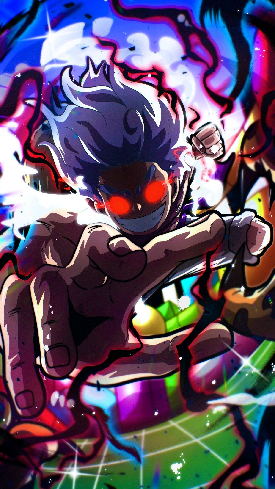

I am a backend developer and web engineer specializing in building efficient, scalable server-side systems and custom web solutions. Skilled in Node.js, Express, PHP, MongoDB, API design, and AWS cloud computing, I focus heavily on security, site reliability, and performance. In addition to custom server architectures, I have extensive experience in WordPress development—including custom theme building, PHP backend integrations, plugin configuration, and website migration. I enjoy solving complex technical problems and creating seamless integrations to ensure high-performing user experiences.
Hire Me